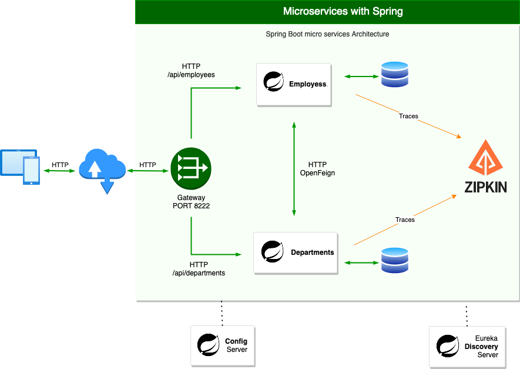

Microservices with Spring Boot
Documentation using Spring Auto REST Docs and Junit 5.

Employee
The Employee microservice needs the following main dependencies:
- DB driver (MySQL, PostgreSQL, etc)
- Lombok
- Spring Data JPA
- Spring Web
- Config client
- Eureka Discovery Client
- Spring Boot Actuator
- Zipkin
- Spring REST Docs
- Spring Auto REST Docs
Department
The Department microservice needs the following main dependencies:
- DB driver (MySQL, PostgreSQL, etc)
- Lombok
- Spring Data JPA
- Spring Web
- Config client
- Eureka Discovery Client
- Spring Boot Actuator
- OpenFeign
- Zipkin
- Spring REST Docs
- Spring Auto REST Docs